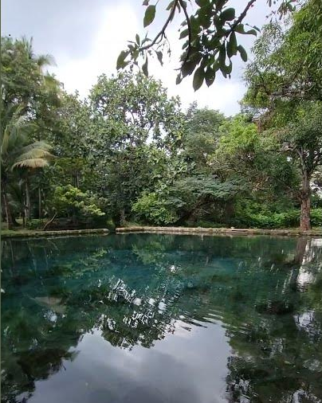

Descubre la magia de Caluco
Explora lugares turisticos, pueblos y naturaleza con cultura y emoción
5+
Turicentros
1000+
Visitantes
4.8
Calificación
Destinos Destacados
Experiencias reales por todo El Salvador

Shutecath
Surf, gastronomía y atardeceres icónicos en La Libertad.
Surf
Cafés
Ambiente

Parque Nacional El Boquerón
Miradores al cráter del volcán y clima fresco en San Salvador.
Miradores
Senderos
Naturaleza
Lago de Coatepeque
Lago volcánico de aguas turquesa con miradores y restaurantes.
Paseos
Gastronomía
Vistas
Actividades Populares
Disfruta de las mejores experiencias
Natación
Disfruta de las piscinas cristalinas
Senderismo
Explora senderos naturales
Pesca
Pesca deportiva en la laguna
Fotografía
Captura momentos únicos
Ubicación
Encuentra todos nuestros destinos
Destinos Turísticos
Tu Ubicación